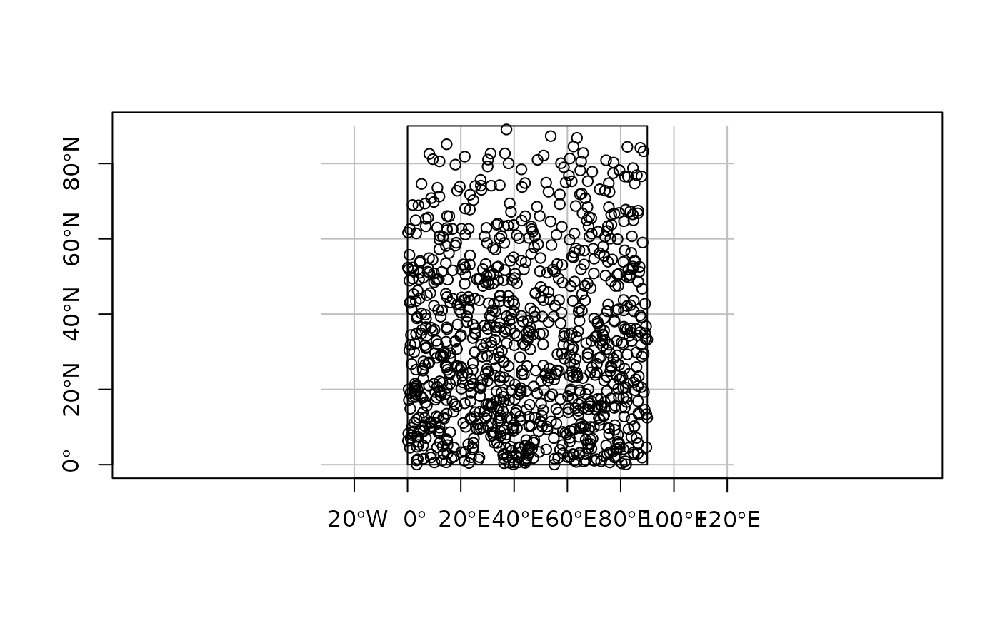
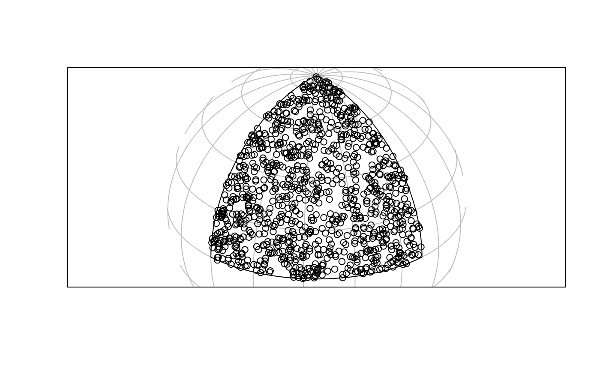
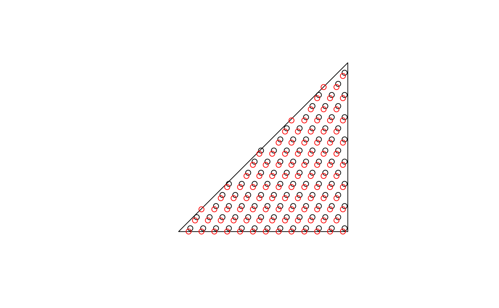
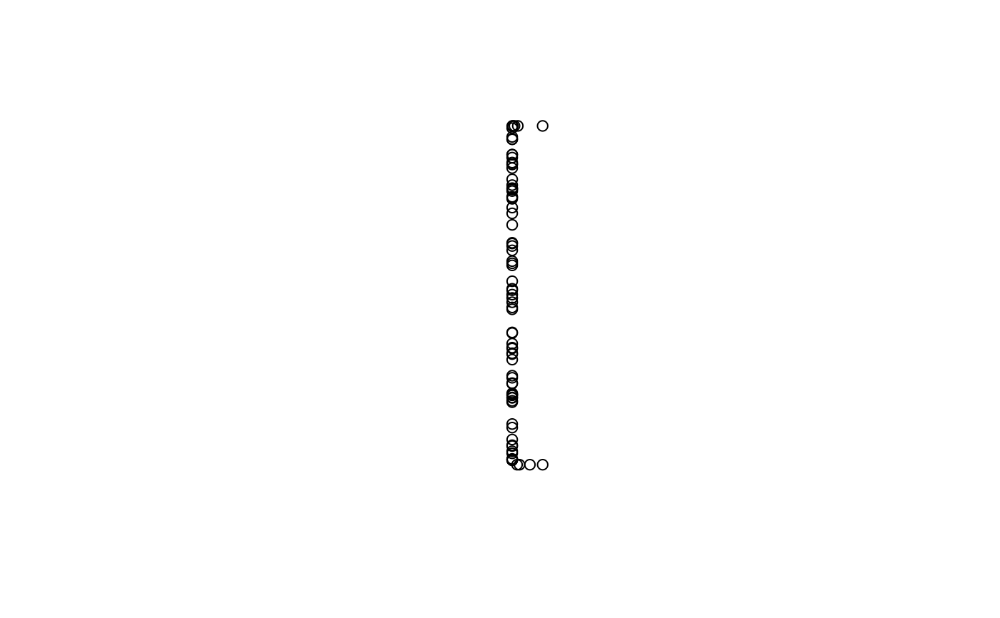

Sample points on or in (sets of) spatial features.
By default, returns a pre-specified number of points that is equal to
size (if type = "random" and exact = TRUE) or an approximation of
size otherwise. spatstat methods are
interfaced and do not use the size argument, see examples.
st_sample(x, size, ...) # S3 method for sf st_sample(x, size, ...) # S3 method for sfc st_sample( x, size, ..., type = "random", exact = TRUE, warn_if_not_integer = TRUE, by_polygon = FALSE ) # S3 method for sfg st_sample(x, size, ...)
Arguments
| x | object of class |
|---|---|
| size | sample size(s) requested; either total size, or a numeric vector with sample sizes for each feature geometry. When sampling polygons, the returned sampling size may differ from the requested size, as the bounding box is sampled, and sampled points intersecting the polygon are returned. |
| ... | passed on to sample for |
| type | character; indicates the spatial sampling type; one of |
| exact | logical; should the length of output be exactly |
| warn_if_not_integer | logical; if |
| by_polygon | logical; for |
Value
an sfc object containing the sampled POINT geometries
Details
The function is vectorised: it samples size points across all geometries in
the object if size is a single number, or the specified number of points
in each feature if size is a vector of integers equal in length to the geometry
of x.
if x has dimension 2 (polygons) and geographical coordinates (long/lat), uniform random sampling on the sphere is applied, see e.g. http://mathworld.wolfram.com/SpherePointPicking.html
For regular or hexagonal sampling of polygons, the resulting size is only an approximation.
As parameter called offset can be passed to control ("fix") regular or hexagonal sampling: for polygons a length 2 numeric vector (by default: a random point from st_bbox(x)); for lines use a number like runif(1).
Sampling methods from package spatstat are interfaced (see examples), and need their own parameters to be set.
For instance, to use spatstat.core::rThomas(), set type = "Thomas".
Examples
#> Reading layer `nc' from data source #> `/private/var/folders/24/8k48jl6d249_n_qfxwsl6xvm0000gn/T/Rtmpv2FvMA/temp_libpathbfd14dce4612/sf/shape/nc.shp' #> using driver `ESRI Shapefile' #> Simple feature collection with 100 features and 14 fields #> Geometry type: MULTIPOLYGON #> Dimension: XY #> Bounding box: xmin: -84.32385 ymin: 33.88199 xmax: -75.45698 ymax: 36.58965 #> Geodetic CRS: NAD27x = st_sfc(st_polygon(list(rbind(c(0,0),c(90,0),c(90,90),c(0,90),c(0,0)))), crs = st_crs(4326)) plot(x, axes = TRUE, graticule = TRUE)x2 = st_transform(st_segmentize(x, 1e4), st_crs("+proj=ortho +lat_0=30 +lon_0=45")) g = st_transform(st_graticule(), st_crs("+proj=ortho +lat_0=30 +lon_0=45")) plot(x2, graticule = g)if (sf_extSoftVersion()["proj.4"] >= "4.9.0") { p2 = st_transform(p, st_crs("+proj=ortho +lat_0=30 +lon_0=45")) plot(p2, add = TRUE) }p_exact = st_sample(x, 1000, exact = TRUE) p_not_exact = st_sample(x, 1000, exact = FALSE) length(p_exact); length(p_not_exact)#> [1] 1000#> [1] 1000x = st_sfc(st_polygon(list(rbind(c(-180,-90),c(180,-90),c(180,90),c(-180,90),c(-180,-90)))), crs=st_crs(4326)) # FIXME: #if (sf_extSoftVersion()["proj.4"] >= "4.9.0") { # p = st_sample(x, 1000) # st_sample(p, 3) #} # hexagonal: sfc = st_sfc(st_polygon(list(rbind(c(0,0), c(1,0), c(1,1), c(0,0))))) plot(sfc)h = st_sample(sfc, 100, type = "hexagonal") h1 = st_sample(sfc, 100, type = "hexagonal") plot(h, add = TRUE)#> [1] 97 99pt = st_multipoint(matrix(1:20,,2)) ls = st_sfc(st_linestring(rbind(c(0,0),c(0,1))), st_linestring(rbind(c(0,0),c(.1,0))), st_linestring(rbind(c(0,1),c(.1,1))), st_linestring(rbind(c(2,2),c(2,2.00001)))) st_sample(ls, 80)#> Geometry set for 4 features (with 1 geometry empty) #> Geometry type: MULTIPOINT #> Dimension: XY #> Bounding box: xmin: 0 ymin: 0 xmax: 0.08531849 ymax: 1 #> CRS: NA#>#>#>#># spatstat example: if (require(spatstat.core)) { x <- sf::st_sfc(sf::st_polygon(list(rbind(c(0, 0), c(10, 0), c(10, 10), c(0, 0))))) # for spatstat.core::rThomas(), set type = "Thomas": pts <- st_sample(x, kappa = 1, mu = 10, scale = 0.1, type = "Thomas") }